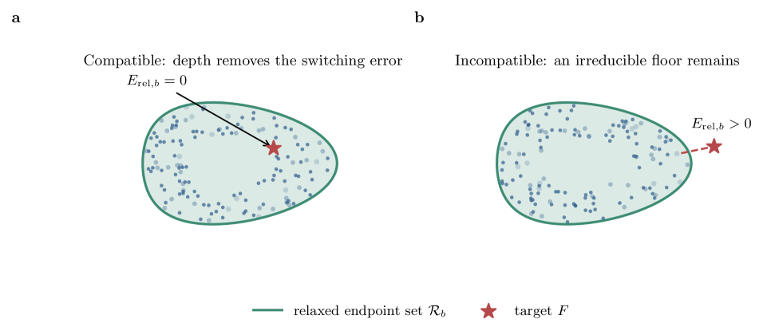
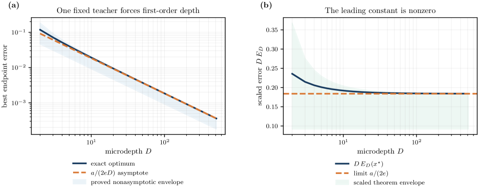
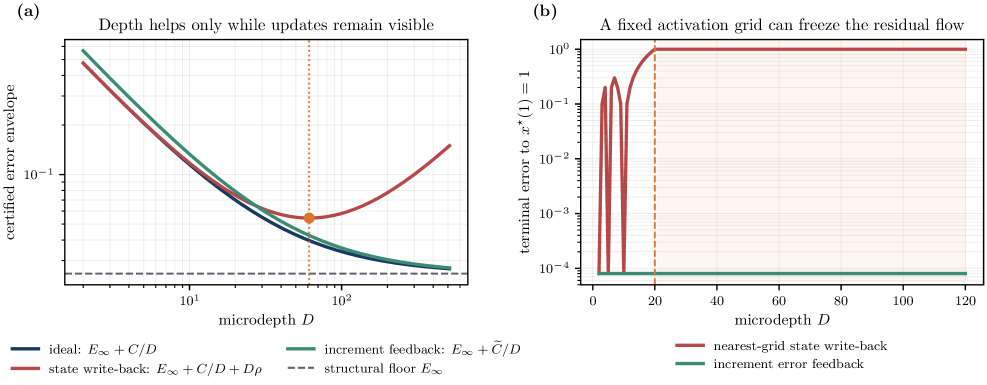

Lean 4 machine-checks the exact discrete core of the quantized residual reachability and depth-precision framework.
Abstract
When can additional low-bit residual computation replace missing numerical precision for a fixed input-output map? We model a quantized residual system over a fixed horizon as a pure schedule selecting fields from a declared low-bit operation library, and use relaxed controls to characterize its infinite-depth limit. The distance from the target to the closed relaxed reachable set is the exact structural floor: no increase in depth can remove it for that library. Pure schedules approach the relaxed class at rate $O(D^{-1})$ under bounded-variation time dependence and $O(D^{-\vartheta}+D^{-1})$ under Holder dependence of exponent $\vartheta$. Execution arithmetic can reverse this conclusion: full-state write-back introduces a $Dρ_z$ penalty and can freeze residual updates, whereas increment error feedback replaces this growth by a bounded carry term and obeys an exact common-lattice conservation law. A fixed-teacher converse makes this rate sharp: for coherent depth-$L$ first-order high-precision comparators, accuracy matching requires $D=Θ(L)$. Learned codebooks add a metadata resource, while state-dependent routing introduces hybrid event conditions. Verified primal and dual bounds yield feasible, impossible, or unresolved decisions before training. Companion software implements the workflow, and Lean 4 machine-checks the exact discrete core. Depth replaces precision only relative to a declared library, horizon, execution semantics, and routing model.
Problem
When can additional low-bit residual computation (depth) replace missing numerical precision for a fixed input-output map? The goal is to characterize the infinite-depth limit, its approach rate, and which resources must scale for that limit to survive real execution.
Approach
A depth-D quantized residual system is modeled as a pure schedule selecting fields from a declared low-bit operation library, with relaxed controls characterizing the infinite-depth limit. The distance from target to the closed relaxed reachable set defines an exact structural floor. Execution arithmetic (write-back versus increment error feedback) and routing are analyzed for their effect on depth scaling, and a primal-dual certification hierarchy decides feasibility before training. Companion software implements the workflow and Lean 4 machine-checks the exact discrete core.

Figure 3: Reachability is a geometric property of the declared operation library. Pure depth- D schedules form a discrete cloud. Balanced switching drives that cloud toward the relaxed reachable set. A compatible target has zero structural floor and only a finite-depth remainder; an incompatible target remains separated even as D\to\infty .
Results
Pure schedules approach the relaxed class at rate O(D^-1) under bounded variation and O(D^-θ + D^-1) under Hölder dependence. A fixed teacher forces a first-order depth price, with coherent depth-L comparators requiring D=Θ(L) for accuracy matching. Full-state write-back introduces a Dρ_z penalty that can freeze updates, while increment error feedback replaces it with a bounded carry obeying a common-lattice conservation law.

Figure 4: A fixed target can require a first-order depth price. (a) The exact optimum in Theorem 10 tracks its a/(2eD) asymptote and remains inside the proved nonasymptotic envelope. (b) Multiplication by D exposes the nonzero limiting constant a/(2e) ; the lower law is not generated by changing the target with D . All curves are analytic consequences of the theorem, not fitted slopes.

Figure 2: Execution arithmetic creates a genuine phase diagram. (a) Ideal synthesis approaches the structural floor, whereas fixed-grid state write-back has a U-shaped envelope and a finite optimal depth. Increment error feedback preserves the first-order law when its physical residual unit scales with the microstep. (b) In an exact scalar diagnostic, a fixed activation grid eventually erases ever